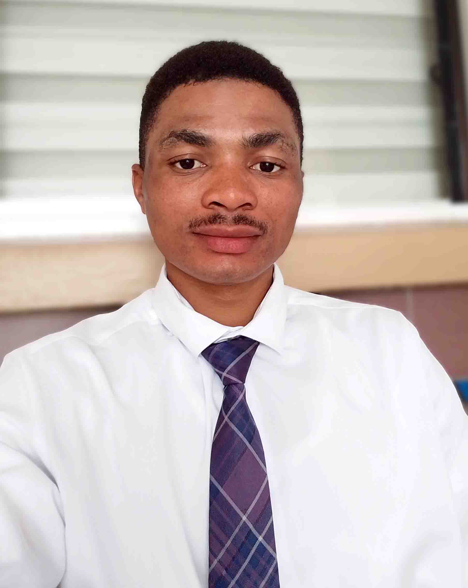

Samuel Okon Udo | WDD130
Hello, I'm Samuel Okon Udo. Welcome to my personal webpage!
I aspire to be a great web developer, creating user-friendly web
applications. I'm currently a student at Brigham Young University-Idaho, pursuing
a degree in Web Design and Development. My goal is to become a proficient web developer,
specializing in crafting responsive and accessible websites that deliver exceptional user experiences.
I view this journey as a valuable opportunity to enhance my skills and prepare myself to make meaningful contributions
in the evolving digital landscape. In my free time, I enjoy exploring new technologies, contributing to open-source projects,
and collaborating with fellow developers to create impactful solutions.